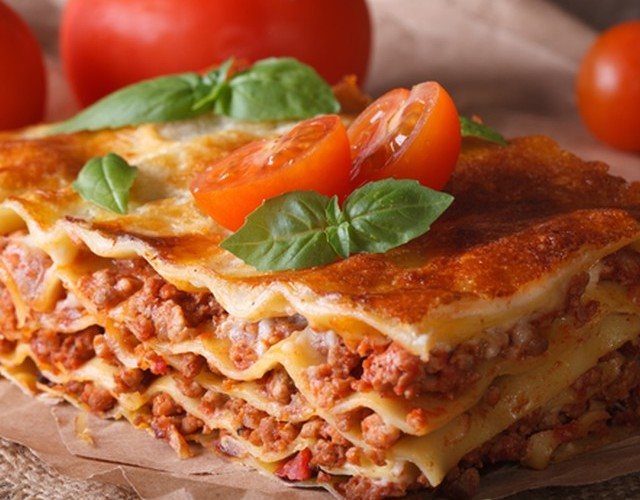

Лазанья з фаршем та помідорами
Апетитна класична лазанья з фаршем і помідорами - справжнє гастрономічнє свято.
При всій своїй соковитості, ніжності і вишуканості, ця страва не вимагає для приготування екзотичних
інгредієнтів - в ньому ідеально поєднуються продукти, які майже завжди є під рукою у будь-якої господині.
Насичений томатний смак з вершковим соусом бешамель підкорить кожного. При подачі прикрасьте свіжим базиліком.
Інгредієнти:
Свинячий фарш - 600 гр
Помідори - 3 шт
Цибуля - 2 шт
Лист лазаньї - 9 шт
Вершкове масло - 50 гр
Часник - 3 зубчика
Молоко - 600 мл
Мука - 5 ст. л.
Сир - 50 гр
Орегано - 1 ч. л.
Сіль - по смаку
Перець - по смаку
Рослнна олія - 2 ст. л.
Етапи приготування:
-
Для приготування класичної лазаньї з помідорами і фаршем потрібно підготувати інгредієнти.
Лук очистити і дрібно нарізати. Фарш обсмажити на олії, додати цибулю, орегано і тушкувати під кришкою 10 хвилин.
-
Помідори промити і нарізати. За допомогою блендера подрібнити помідори з часником до однорідної маси.
Надіслати до фаршу, перемішати, тушкувати на середньому вогні 10 хвилин.
- Приготувати соус бешамель. У глибокій сковороді розтопити вершкове масло, додати борошно і,
інтенсивно помішуючи, влити частинами гаряче молоко, приправити сіллю, потім довести до кипіння і вимкнути.
-
У форму для запікання вилити половину соусу бешамель, на дно форми викласти листи лазаньї, зверху розподілити фарш,
потім викласти ще листи лазаньї і повторити крок.
- Верхній шар листа лазаньї полити соусом бешамель і посипати тертим сиром. Запікати лазанью в духовці 40 хвилин при 180 градусах до утворення золотистої скоринки.
- Смачного!